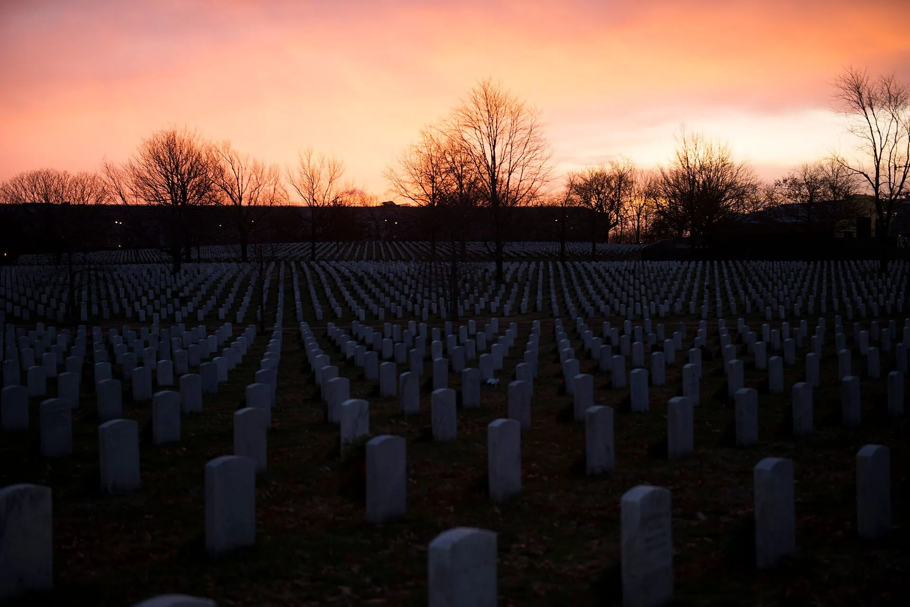

November 11
Veterans Day lesson: teach it in 25 minutes, straight from this page
A free, no prep Veterans Day lesson for grades 3 to 8: why November 11 at 11 a.m., how it differs from Memorial Day, and a question writing task.
What your class will see
Press Teach it now and the board plays these in order. Click any slide to start there.
What it is
Veterans Day honors everyone who served honorably in the United States military, in wartime or peacetime. It is largely meant to thank living veterans. It falls on November 11 every year, whatever day of the week that is.
The date comes from the end of the fighting in World War I. The armistice between the Allies and Germany took effect at 11 a.m. Paris time on November 11, 1918: the eleventh hour of the eleventh day of the eleventh month. The war did not officially end until the Treaty of Versailles on June 28, 1919. The United States first marked Armistice Day in November 1919 and made it a legal holiday in 1938.
In 1954, after World War II and the Korean War, Congress replaced the word Armistice with Veterans so the day would honor veterans of every war. It is not the same as Memorial Day, on the last Monday of May, which honors the people who died while serving.
How to run it
25 minutes, 4 steps. The time on the left is when each step starts.
-
0:00
Warm-up
5 minOn the board11th month. 11th day. 11 a.m. Why would a country choose an exact minute to remember something?
You do- Show the question. Give students one minute to think, then take three guesses.
- Do not correct anyone yet.
Say: Hold on to your guess. We will check it in five minutes.
-
5:00
The story in four facts
7 minOn the board- 11 a.m., November 11, 1918: the fighting in World War I stops.
- 1919: the United States marks the first Armistice Day.
- 1954: Armistice Day is renamed Veterans Day, to honor veterans of every war.
- Veterans Day honors everyone who served. Memorial Day honors those who died serving.
You do- Read the four facts aloud, one at a time.
- After the first fact, go back to the warm-up guesses. Which guess came closest?
- After the last fact, ask one student to explain the difference between Veterans Day and Memorial Day in their own words.
Say: An armistice is an agreement to stop fighting. The war did not officially end that morning, but the guns stopped.
-
12:00
Questions worth asking
10 minOn the boardWrite three questions you would ask a veteran. One about the job. One about being far from home. One about coming home.
You do- Students write alone for four minutes.
- Pairs compare and choose their best question in each of the three groups.
- Collect one question per group from each pair and write the class list on the board.
Say: A specific question shows a veteran you are interested in their story. It means more than a general thank you.
-
22:00
Exit ticket
3 minOn the boardIn one sentence: what is the difference between Veterans Day and Memorial Day?
You do- Students answer on a scrap of paper and hand it to you at the door.
Discussion questions
Open an answer when you want it.
Why do you think Congress changed the name from Armistice Day to Veterans Day in 1954?
By 1954 the country had also fought World War II and the Korean War. The 1938 law had made Armistice Day mainly a day for World War I veterans, and veterans groups urged Congress to make it a day for veterans of all wars.
What is the difference between thanking someone and remembering someone?
We thank people who are here to hear it. We remember people who are gone. Veterans Day leans toward thanks and Memorial Day toward remembrance.
Why might a veteran prefer a specific question to a general thank you?
A question about their own experience shows real interest in what they did, not only in the uniform.
Exit ticket
In one sentence, what is the difference between Veterans Day and Memorial Day?
Veterans Day honors everyone who served. Memorial Day honors those who died while serving.
Make it fit your class
Younger students
For kindergarten to grade 2, skip the dates. Explain that a veteran is someone who served in the armed forces, and that Veterans Day is the day the country says thank you. Students draw a card and tell you one sentence to write on it.
Older students
For grades 9 to 12, add the words President Wilson used in November 1919 to mark the first Armistice Day, as quoted by the VA: "solemn pride in the heroism of those who died in the country's service" and "gratitude for the victory." Ask: what did Wilson think the day was for, and how is that different from how the country uses it now? (In the part the VA quotes, Wilson speaks of pride in those who died, gratitude for the victory, and peace and justice among nations. Today the day honors everyone who served and is largely meant to thank the living.)
Spanish class version
In Spanish, the holiday is el Día de los Veteranos. Use it for a short vocabulary and writing task.
- el veterano, la veteranaveteran
- servirto serve
- las fuerzas armadasthe armed forces
- la pazpeace
- el armisticioarmistice
- agradecerto thank
- recordarto remember
Task: Students write a three sentence card in Spanish that starts with Gracias por and names one specific thing.
Where the facts come from
- U.S. Department of Veterans Affairs, History of Veterans Day. Used for the eleventh hour of the eleventh day of the eleventh month, the Treaty of Versailles date, the 1919 first observance and Wilson's words, the 1938 law, and the 1954 rename.
- U.S. Department of Veterans Affairs, Veterans Day Facts and Information. Used for the difference between Veterans Day and Memorial Day, who the day honors, and the fixed November 11 date.
- Library of Congress, World War I Armistice (Chronicling America research guide). Used for the armistice taking effect at 11:00 a.m. Paris time on November 11, 1918.
- USA.gov, Federal holidays. Used for Memorial Day on the last Monday of May, and the one line description of each holiday.
- USA.gov, Día de los Veteranos. Used for the Spanish name of the holiday.
Image credits
- Sunrise over Arlington National Cemetery (31473895153) by Arlington National Cemetery, Public Domain. Source.
- The announcing of the armistice on November 11, 1918, was the occasion for a monster celebration in Philadelphia... - NARA - 533478 by Unknown photographer, U.S. National Archives (NARA 533478), Public Domain. Source.
- Foch train by Unknown, US Army Signal Corps photo, Public Domain. Source.
- Screaming Eagle Honor Flight aims to honor vets 072515-A-SM569-201 by Staff Sgt. Sierra Fown, Public Domain. Source.
- Kurt Chew-Een Lee - 2010 by Library of Congress: Veterans History Project, Public Domain. Source.
- Flags In 2023 at Arlington National Cemetery 03 by Arlington National Cemetery, Public Domain. Source.
- Thank You Card on Top of an Envelope by alleksana, Pexels License. Source.
- Armistice Day Parade, 1919 (49194614307) by Leland O. Tilford Salem State Archives and Special Collections from Salem, Massachusetts, CC BY. Source.
- Light symbol of world peace. Washington, D.C., Nov. 4. A torch, symbolic of peace and amity, was lighted last night before the tomb of the unknown soldier at Arlington National Cemetery. LCCN2016874281 by Harris & Ewing, photographer, Public Domain. Source.
- 72-901-1 HR7786 Veterans Day June 1 1954 by Eisenhower Presidential Library, U.S. Government, Public Domain. Source.
- USMC-111111-M-KZ372-187 by Sgt. Randall A. Clinton, U.S. Marine Corps, Public Domain. Source.
.jpg#Licensing){kind=link}
.jpg){kind=link}


.jpg){kind=link}


Updated October 31, 2026